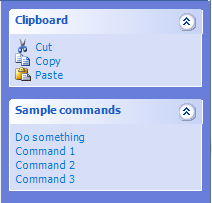

Task Panes
A task pane allows you to organize commands into expandable groups that appear on a side pane.

A simple task pane.
Use a task pane when
- Your page has several commands that benefit from being grouped by category.
- Users frequently perform actions on the objects or data displayed in the main view.
- Commands need to remain visible and accessible without navigating through menus.
- The page has sufficient space to accommodate a side pane without making the main content area uncomfortably narrow.
Do not use a task pane when
- Your page only has a few simple commands that fit naturally in a toolbar or menu.
- Commands are rarely used and would add unnecessary clutter.
- The main view needs all available space to display its content.
- Commands are unrelated and cannot be organized into meaningful groups.
Usage patterns
Task panes have the following usage patterns:
- Primary Task Panes - Task panes designed to work without a toolbar or menu bar.
- Supplemental Task Panes - Task panes designed to be placed alongside a menu bar or toolbar. A supplemental task pane should provide convenient access to frequently used commands. Less frequently used commands may remain on the menu bar or toolbar.
Commands in a task pane can have the following usage patterns:
- Immediate - The command takes effect as soon as the user invokes the command.
- Interactive - The command requires additional user input.
Guidelines
- Include a Common Tasks group as the first group in the task pane if you have a set of commands that users will use most often.
- Place task panes on the right side of your page to stay consistent with other System Manager pages.
- Make your task pane 150px or wider. The recommended width range is around 180-230 px.
- Keep groups reasonably balanced, without sacrificing logical grouping.
- Respect the active color scheme. Task panes should use colors appropriate to the user's selected System Manager color scheme. Otherwise, this will result in a poor user experience.
- Hide commands from the task pane if they don't apply to the current context. If this results in the group displaying no commands, hide the group itself.
- Within each group, place the most frequently used commands first.
- Prefer standalone dialogs that appear after clicking a command instead of popup menus.
- Keep groups focused. Each group should contain commands related to a single task or purpose.
- Use concise group titles. Titles should describe the commands inside the group, not the underlying implementation.
- Use clear command names. Prefer action-oriented labels such as Refresh, Export, or View Properties.
- Avoid unnecessary commands. Don't add commands merely to fill space or make groups look balanced.
- Provide appropriate feedback. Commands that take time to complete should communicate progress, and commands that fail should explain the problem where practical.
- Make consequential actions clear. Commands that delete data, perform destructive operations, or otherwise have significant effects should communicate their consequences and request confirmation when appropriate.